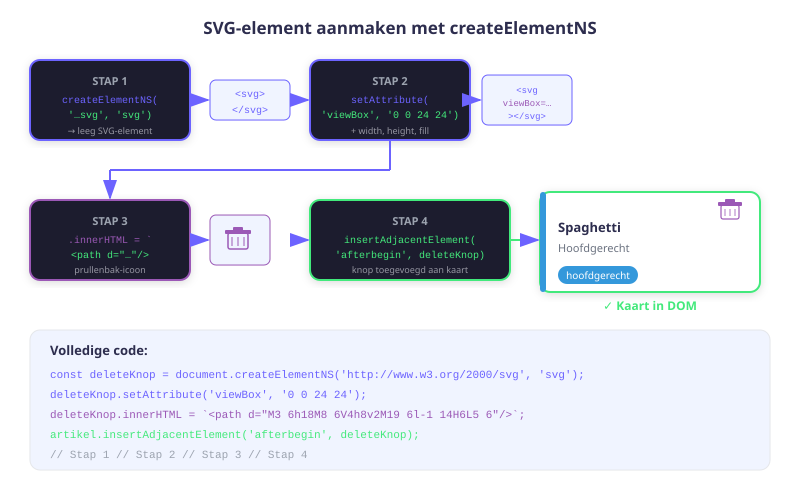
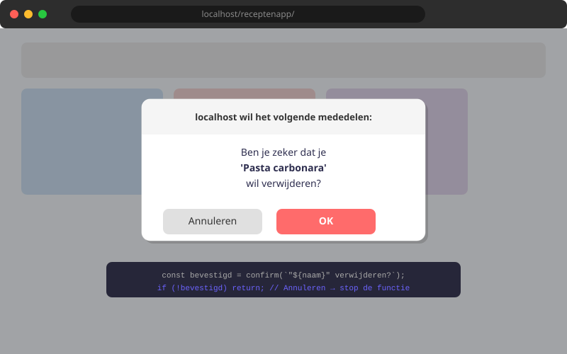

Receptenapp — localStorage integreren
- Data persistent bewaren en ophalen via de
updateLS()hulpfunctie - De verwijderfunctie koppelen aan een SVG-delete-knop in de DOM
findIndex()ensplice()gebruiken om een element uit een array te verwijderen- Een Custom Event gebruiken om de pagina te vernieuwen zonder de browser te herladen
- De volledige flow van de app begrijpen: toevoegen → opslaan → weergeven → verwijderen
12.1 Terugblik: waar staan we?
| Hoofdstuk | Wat is gebouwd |
|---|---|
| H09 | Bestandsstructuur, recepten.js, hulpfuncties.js, index.html, add.html, stijl.css |
| H10 | script.js: recepten laden en weergeven als kaarten |
| H11 | add.js: formulier, validatie, toevoegen, willekeurig, wissen |
| H12 | Verwijderknop koppelen, Custom Event, volledige flow |
Na dit hoofdstuk heb je een volledig werkende app: recepten toevoegen, bewaren in localStorage en verwijderen.
12.2 SVG delete-knop aanmaken
In voegReceptToe() (script.js) voegen we een verwijderknop toe als SVG-element. SVG-elementen worden aangemaakt met createElementNS (namespace vereist):
function voegReceptToe(recept) {
const artikel = document.createElement('article');
artikel.innerHTML = `
<h2>${recept.naam}</h2>
<p>${recept.beschrijving}</p>
<p class="meta">${recept.categorie} — ${recept.bereidingstijd} min</p>
`;
artikel.classList.add(recept.categorie);
// SVG delete-knop aanmaken
const deleteKnop = document.createElementNS('http://www.w3.org/2000/svg', 'svg');
deleteKnop.setAttribute('viewBox', '0 0 24 24');
deleteKnop.setAttribute('fill', 'none');
deleteKnop.setAttribute('width', '30px');
deleteKnop.setAttribute('height', '30px');
deleteKnop.innerHTML = `
<path d="M10 12V17" stroke-width="2" stroke-linecap="round"/>
<path d="M14 12V17" stroke-width="2" stroke-linecap="round"/>
<path d="M4 7H20" stroke-width="2" stroke-linecap="round"/>
<path d="M6 10V18C6 19.66 7.34 21 9 21H15C16.66 21 18 19.66 18 18V10"
stroke-width="2" stroke-linecap="round"/>
<path d="M9 5C9 3.9 9.9 3 11 3H13C14.1 3 15 3.9 15 5V7H9V5Z"
stroke-width="2" stroke-linecap="round"/>
`;
// Knop bovenaan het artikel plaatsen
artikel.insertAdjacentElement('afterbegin', deleteKnop);
// Event listener op de knop
deleteKnop.addEventListener('click', () => {
verwijderRecept(recept.naam);
});
document.querySelector('section.recepten').appendChild(artikel);
}
12.3 De verwijderRecept() functie
const receptenSectie = document.querySelector('section.recepten');
const update = new CustomEvent('receptenUpdate');
function verwijderRecept(verwijderNaam) {
// Stap 1: Zoek de index van het recept in de array
const index = alleRecepten.findIndex(r => r.naam === verwijderNaam);
// Stap 2: Verwijder het element op die index (1 element)
alleRecepten.splice(index, 1);
// Stap 3: Sla de bijgewerkte array op in localStorage
updateLS(alleRecepten);
// Stap 4: Stuur een Custom Event om de UI te verversen
receptenSectie.dispatchEvent(update);
}Laten we findIndex() en splice() stap voor stap doorlopen:
// Stel: alleRecepten = [
// { naam: 'Pasta', ... }, index 0
// { naam: 'Soep', ... }, index 1
// { naam: 'Salade', ... }, index 2
// ]
const index = alleRecepten.findIndex(r => r.naam === 'Soep');
// index = 1
alleRecepten.splice(1, 1);
// alleRecepten is nu: [{ naam: 'Pasta' }, { naam: 'Salade' }]12.4 Custom Event: de pagina verversen zonder herladen
Een Custom Event is een event dat je zelf definieert en verstuurt. Het werkt als een signaal tussen onderdelen van je code:
// 1. Definieer het event (eenmalig, bovenaan het bestand)
const update = new CustomEvent('receptenUpdate');
// 2. Luister naar het event op de sectie
receptenSectie.addEventListener('receptenUpdate', toonRecepten);
// 3. Verstuur het event (triggert de listener)
receptenSectie.dispatchEvent(update);| Stap | Code | Wat er gebeurt |
|---|---|---|
| 1 | new CustomEvent('receptenUpdate') | Maak een nieuw event-object aan |
| 2 | receptenSectie.addEventListener(...) | Registreer een luisteraar op dit element |
| 3 | receptenSectie.dispatchEvent(update) | Schiet het event af → de luisteraar wordt uitgevoerd |
12.5 De toonRecepten() functie
toonRecepten() bouwt de volledige receptensectie opnieuw op na elke wijziging:
function toonRecepten() {
// Leeg de sectie
document.querySelector('.recepten').innerHTML = '';
// Herbouw vanuit de array
alleRecepten.forEach(r => voegReceptToe(r));
// Toon/verberg de leesboodschap
document.querySelector('#geenrecepten').style.display =
alleRecepten.length === 0 ? 'block' : 'none';
}
// Koppel de listener en roep bij start op
receptenSectie.addEventListener('receptenUpdate', toonRecepten);
toonRecepten(); // Toon recepten bij paginaladen12.6 De volledige flow testen
- Open
add.html→ vul een recept in → klik "Toevoegen" - Ga naar
index.html→ het recept staat er! - Ververs de pagina (
F5) → het recept blijft staan (localStorage) - Klik op de delete-knop → recept verdwijnt
- Ververs de pagina → recept is ook echt weg (localStorage bijgewerkt)
- Pas de array aan (
pushofsplice) - Sla op via
updateLS() - Stuur een Custom Event om de UI te vernieuwen
Oefeningen
Test de complete flow van de app:
- Voeg 5 recepten toe via het formulier (minstens 2 per categorie).
- Ververs de pagina en controleer dat alle recepten er nog zijn.
- Verwijder 2 recepten. Ververs opnieuw en controleer.
- Open DevTools → Application → Local Storage. Bekijk de JSON-data. Hoe ziet de structuur eruit?

Voeg aan verwijderRecept() een confirm() toe zodat de gebruiker een bevestiging moet geven voor het verwijderen:
function verwijderRecept(verwijderNaam) {
if (!confirm(`Ben je zeker dat je "${verwijderNaam}" wil verwijderen?`)) return;
// ... rest van de functie
}Leg in eigen woorden uit waarom we findIndex() gebruiken in plaats van indexOf() bij een array van objecten. Schrijf een klein testje in de console om het verschil te illustreren:
const namen = ['Pasta', 'Soep', 'Salade'];
console.log(namen.indexOf('Soep')); // 1 — werkt voor primitieve waarden
const recepten = [
{ naam: 'Pasta', tijd: 20 },
{ naam: 'Soep', tijd: 35 }
];
// Probeer dit eens:
console.log(recepten.indexOf({ naam: 'Soep', tijd: 35 })); // Wat geeft dit?
console.log(recepten.findIndex(r => r.naam === 'Soep')); // En dit?Huistaak
Opdracht: Volledige basisflow implementeren
Integreer alle onderdelen van H12 in je Receptenapp en test de volledige flow.
Deel 1 — Verwijderknop (4 punten)
- Implementeer de SVG delete-knop in
voegReceptToe(). - Implementeer
verwijderRecept()metfindIndex()ensplice(). - Voeg een bevestigingsvenster toe.
Deel 2 — Custom Event (3 punten)
- Definieer het Custom Event en koppel de luisteraar.
- Zorg dat de UI automatisch bijwerkt na verwijderen.
Deel 3 — Volledige flow (3 punten)
- Test de volledige flow: toevoegen, bewaren, weergeven, verwijderen.
- Maak een screenshot van de localStorage in DevTools met minstens 3 recepten.
Vragenlijst
Controleer of je de leerstof van dit hoofdstuk begrijpt.
Wat doet alleRecepten.findIndex(r => r.naam === 'Soep')?
Wat doet alleRecepten.splice(2, 1)?
Wat doet receptenSectie.dispatchEvent(update)?
Waarom gebruiken we createElementNS voor SVG-elementen?
In welke volgorde verlopen de stappen na het verwijderen van een recept?
Waarom wordt receptenSectie.innerHTML = '' aangeroepen aan het begin van toonRecepten()?